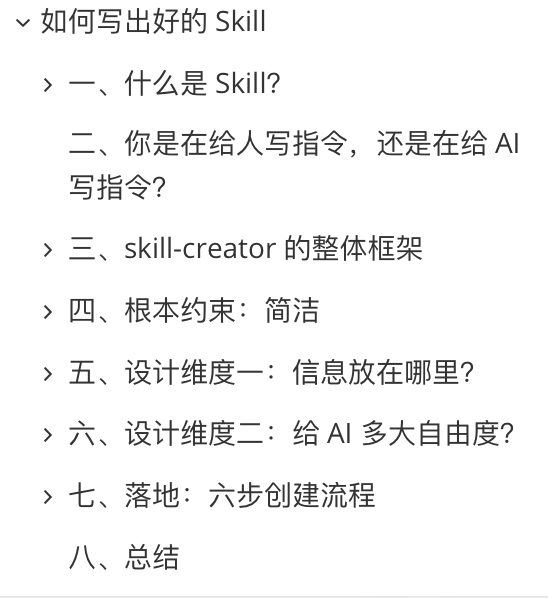
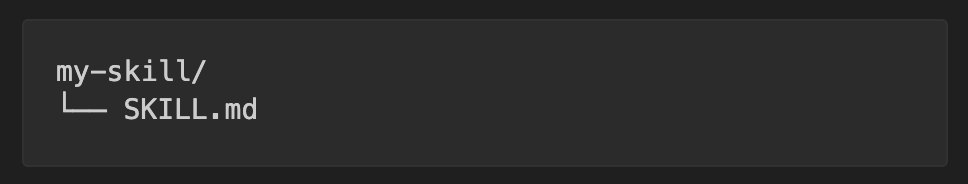
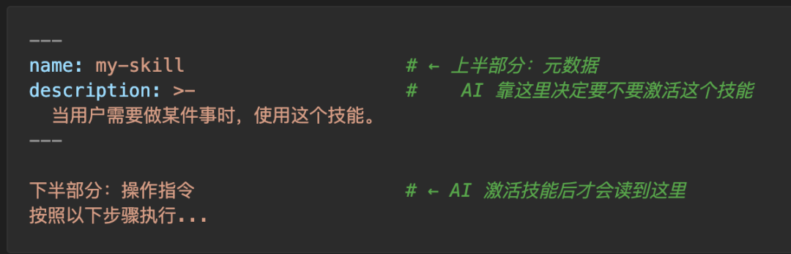
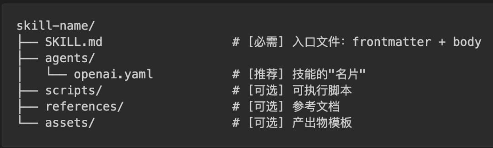
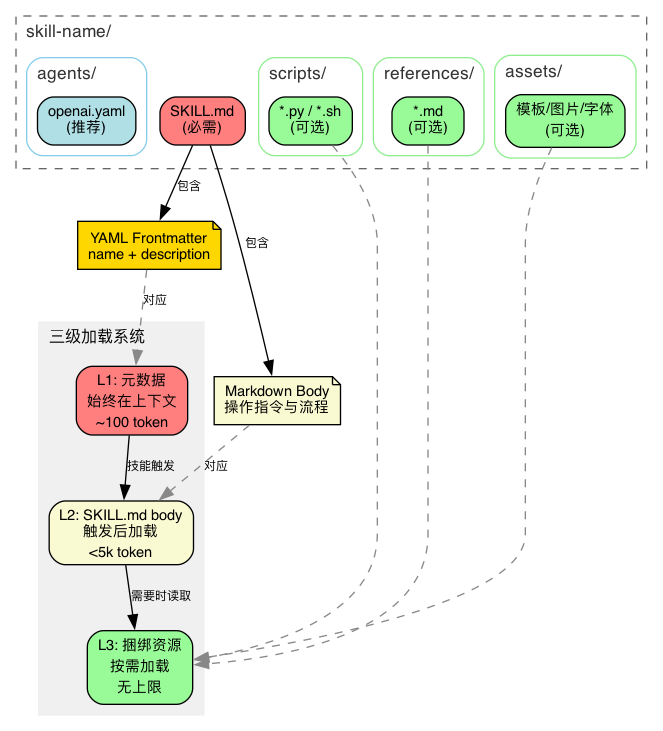
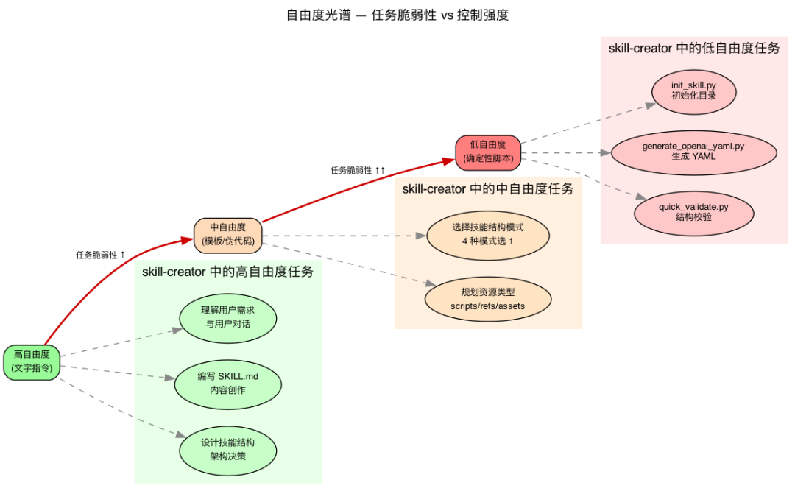
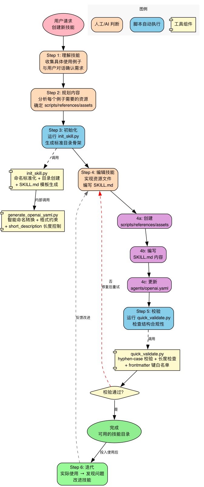
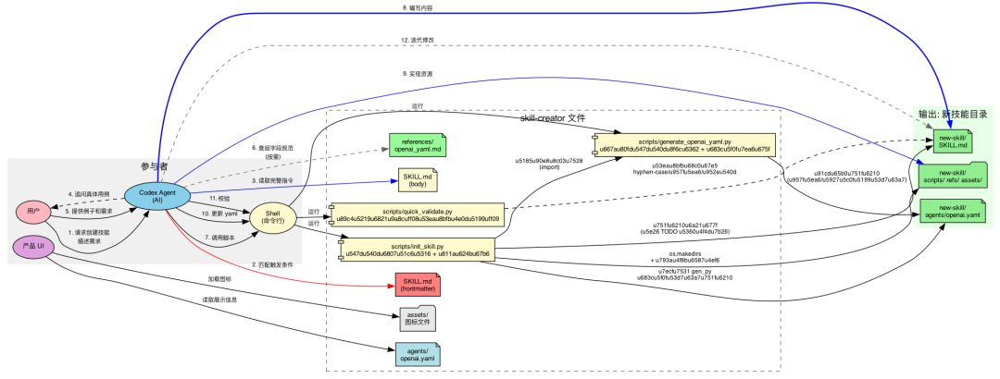
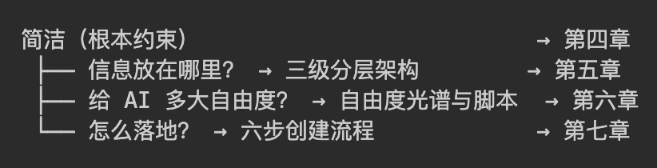
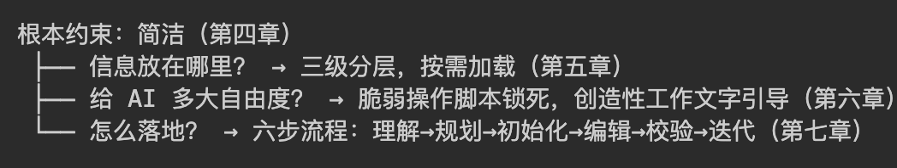

什么是 Skill？怎么写好skill？沿着 skill-creator 的设计思路，找到答案。

一、什么是 Skill？
1.1 定义
Skill 是一个文件夹，里面装着指令文档、参考资料、可执行脚本等资源。AI 拿到它，就能胜任一项原本不会的特定工作。
比如一个 pdf-editor 技能文件夹里，可能有一份"怎么处理 PDF"的操作指令、一个旋转 PDF 的 Python 脚本、一份 API 参考文档——AI 不需要从外部再找任何东西，这个文件夹里全有了。
这个概念不限于某一个产品。无论是 Codex、Claude 还是其他 AI Agent，skill 的本质都一样。你可以把它理解为 AI 的一个能力插件——插上去，AI 就多了一项专长；拔掉，AI 还是原来那个通用助手。
1.2 最小形态
一个 skill 最少只需要一个文件：

SKILL.md 的结构很简单——上半部分告诉 AI"什么时候用我"，下半部分告诉 AI"具体怎么做"：

上半部分叫 frontmatter（--- 之间的 YAML），包含 name 和 description 两个字段。AI 在每次对话开始时都会扫描所有已安装技能的 frontmatter，靠 description 来判断"这个技能和当前请求相关吗"——这是技能的唯一触发点。
下半部分叫 body（Markdown 正文），是技能被激活之后才加载的操作指令。如果技能没被触发，AI 永远不会读到这里。
1.3 完整结构
当一个技能变复杂时，单靠一个 SKILL.md 就不够了。
比如你要做一个"PDF 处理"技能：SKILL.md 里写了处理流程，但旋转 PDF 的代码每次都一样，每次让 AI 重写既浪费时间又可能出错——不如直接放一个写好的 Python 脚本。再比如"前端项目生成器"技能：每次都要一套 HTML/React 的样板文件，不如直接放一个模板目录让 AI 拷贝出来改。
所以完整的 skill 目录可以包含这些东西：

逐个说明：
• SKILL.md — 唯一必需的文件，前面已经介绍过 • scripts/ — 写好的程序，AI 不需要读懂它，直接调用 shell 执行就行。比如 scripts/rotate_pdf.py，AI 只要跑python rotate_pdf.py input.pdf 90就能旋转 PDF，不用每次重新写旋转逻辑。适合那些结果必须精确、不能让 AI 自由发挥的操作• references/ — AI 在工作过程中需要查阅的参考资料。比如一个"BigQuery 查询"技能，AI 要知道公司有哪些表、每个表有什么字段，这些信息放在 references/schema.md里，AI 需要时再读取。和 scripts 的区别是：references 是给 AI 读的，scripts 是给 AI 执行的• assets/ — 不是给 AI 看的，而是直接用在最终产出里的文件。比如一个"前端项目生成器"技能， assets/frontend-template/里放着一套 HTML/React 样板代码，AI 直接把这套模板拷贝出来，在上面修改。再比如assets/logo.png是公司 logo，AI 生成网页时直接引用它。AI 不需要"读懂"一张 logo 图片，只需要知道它在哪、什么时候放进去• agents/openai.yaml — 技能的"名片"。很多 AI 产品会在界面上展示一个技能列表，让用户选择或搜索。这个文件里存的就是列表中显示的名称、简介、图标等信息。它不影响 AI 的行为，纯粹是给产品界面用的
二、你是在给人写指令，还是在给 AI 写指令？
知道了 skill 是什么，下一步就是写一个。但大多数人第一次写出来的 skill 都有同一个问题。
看一个例子。假设要做一个"代码审查"技能，你可能会这样写：
---
name: code-review
description: 代码审查技能
---
# Code Review Skill
## 背景
本技能基于团队多年的代码审查经验总结而成，旨在提升代码质量和团队协作效率。
## 审查原则
- 保持专业、建设性的语气
- 关注代码质量而非个人风格
- 平衡严格性和灵活性
## 使用方式
当用户提交代码时，对代码进行全面审查，给出改进建议。注意保持友好和鼓励的态度。
## 版本记录
- v1.0: 初始版本
- v1.1: 增加了对 Python 的支持如果这是一份给人看的团队文档，它写得不错——有背景、有原则、有使用方式，甚至还有版本记录。
但 skill 的读者是 AI。用这个视角重新审视：
• "基于团队多年经验总结" — AI 不关心这个技能是怎么来的，它只需要知道现在该怎么做 • "保持专业、建设性的语气" — 人类读了能 get 到一个大致的感觉，但 AI 会把"专业"和"建设性"展开成无数种组合，每次输出都不一样 • "平衡严格性和灵活性" — 人类经验丰富的审查者知道什么时候严格什么时候灵活，但 AI 没有这个直觉，这句话等于没说 • "全面审查，给出改进建议" — 这是对人类审查者的期望，但 AI 需要的是：先检查什么？再检查什么？什么问题必须指出？什么问题可以忽略？ • "版本记录" — AI 每次被唤醒都是全新的，v1.0 还是 v1.1 对它没有意义 • description 只写了"代码审查技能" — AI 靠 description 判断是否触发，"代码审查技能"五个字太模糊：用户说"帮我看看这段代码"要触发吗？"这个函数性能怎么样"要触发吗？
每一条单独看都没啥问题，但它们都是写给人看的。问题不在于写得不够多，而在于写错了对象。
那正确的写法是什么样的？我们来看一个现成的答案——codex的skill-creator。它是一个"创建 skill 的 skill"，它自己的 SKILL.md 就是一份关于"如何给 AI 写指令"的最佳实践。
三、skill-creator 的整体框架
打开 skill-creator 的 SKILL.md（约 370 行），在深入任何细节之前，我们先建立对它的整体认知。
skill-creator 要解决的问题只有一个：怎么在有限的上下文窗口里，给 AI 最有效的指令？
围绕这个问题，它给出了一套完整的设计体系，可以用三个层次来理解。
第一层：根本约束——简洁
AI 的上下文窗口是有限的，而且是共享的（系统提示、对话历史、所有已安装技能的元数据都在里面）。你的 skill 占得越多，留给其他用途的就越少。所以 skill-creator 的第一原则就是：每一句话都要值得它占用的 token。
第二层：两个设计维度
在"简洁"这个约束下，写 skill 时面临两个核心决策：
维度一：信息放在哪里？
不是所有信息都需要一开始就加载。skill-creator 设计了一个三级分层架构，让不同的信息在不同的时机进入上下文：

• L1（元数据）：始终在上下文中，约 100 词——AI 靠它判断要不要激活这个技能 • L2（SKILL.md body）：触发后才加载，控制在 5k 词以内——操作指令 • L3（scripts/references/assets）：按需使用，无上限——其中 scripts 执行而不读入，零 token 成本
这解决了"怎么用最少的 token 承载最多的信息"。
维度二：给 AI 多大自由度？
不是所有任务都适合让 AI 自由发挥。
举个例子：让 AI 写一篇技术博客，十个人写出十种风格都可以——你只需要给方向，具体怎么写让 AI 自己决定。这就是高自由度。
但让 AI 生成一个 YAML 配置文件就不一样了。比如 skill-creator 要生成的 openai.yaml，里面有个 short_description 字段，要求 25-64 个字符、首字母大写、不能有引号。AI 写成 65 个字符？不行，产品界面会截断。写成 24 个字符？不行，校验不通过。漏了首字母大写？界面显示不一致。这种任务差一个字符就出问题，你不能让 AI 自由发挥，必须用脚本来锁死格式——这就是低自由度。这类任务叫"脆弱操作"：不是说它复杂，而是说它做对只有一种方式，做错有一百种方式。

这解决了"怎么在 AI 的灵活性和输出的可靠性之间取得平衡"。
第三层：落地流程
有了原则和架构，skill-creator 最后给出了一个六步创建流程，把设计思想变成可执行的操作步骤：

理解→规划→初始化→编辑→校验→迭代。其中脚本代码贯穿流程，形成确定性的保障：

框架总览
三个层次的关系：

接下来的每一章都在这个框架内展开。
四、根本约束：简洁
框架位置：第一层
4.1 核心约束
AI 的上下文窗口就像一张工作台——它同一时间能摊开的资料是有限的。而这张工作台上已经放着不少东西了：系统自己的规则、用户之前说过的话、所有已安装技能的简介。你的 skill 一旦被激活，它的内容也要摊上去。工作台就这么大，你占得越多，留给其他东西的空间就越少。
所以 skill-creator 把这一点写成了第一条原则：
The context window is a public good. Skills share the context window with everything else Codex needs: system prompt, conversation history, other Skills' metadata, and the actual user request.
既然工作台空间有限，那写 skill 时怎么判断一段内容该不该放进去？skill-creator 给了一个前提假设：AI 本身已经很聪明了，你只需要补充它不知道的东西。
Default assumption: Codex is already very smart. Only add context Codex doesn't already have.
基于这个假设，每写一段内容之前问自己两个问题：
• "AI 是不是已经知道这个了？" — 比如"Python 的 for 循环怎么写"，AI 当然知道，不用教 • "这段内容值不值得占用工作台上的空间？" — 一段 200 字的解释，能不能用一个 10 行的代码示例替代？
实操推论：用简洁的示例代替冗长的解释。一个好的代码示例胜过三段文字描述。
4.2 什么不该放进 Skill？
Skill-creator 明确列出了禁止清单：
A skill should only contain essential files that directly support its functionality. Do NOT create extraneous documentation or auxiliary files.
不该有的文件：
• README.md • INSTALLATION_GUIDE.md • QUICK_REFERENCE.md • CHANGELOG.md
The skill should only contain the information needed for an AI agent to do the job at hand. It should not contain auxiliary context about the process that went into creating it, setup and testing procedures, user-facing documentation, etc. Creating additional documentation files just adds clutter and confusion.
原因很简单：skill 的读者是 AI，不是人类开发者。AI 不需要安装指南、更新日志、快速参考这些"人类辅助文档"。每一个多余的文件都是噪音。
4.3 写约束时，"不做什么"比"做什么"更精确
简洁不只是"少写"，还包括"写对"。看一个例子。
当 skill-creator 创建 laotou-thought-style（一种写作风格技能）时，它没有写：
请用温暖、克制、有洞察力的语气写作。这种正面描述看起来清晰，但对 AI 来说，"温暖"的程度、"克制"和"有洞察力"之间的平衡——全是模糊空间。
它做的是写了一份反模式清单（references/anti-patterns.md）：
每一条都是具体的、可检测的、有明确修正方案的。
背后的原理：
"做什么" → 描述一个无限大的可行域 → AI 在里面随机游走
"不做什么" → 在可行域上画边界 → AI 的行为空间被收窄到你想要的范围skill-creator 自身也遵循了这个原则——它的 SKILL.md 用了很大篇幅说"什么不该写"（What to Not Include in a Skill），而不是泛泛地说"写好内容"。
当你写完 SKILL.md，做一次"反转测试"：每一条正面指导，能不能改写成"不要做X"的形式？如果可以，改写后通常更精确。
4.4 统一使用祈使语气
skill-creator 要求 SKILL.md 的正文统一使用祈使语气/不定式（Always use imperative/infinitive form）。这不是美学偏好，而是为了减少歧义——祈使句天然就是指令。
五、设计维度一：信息放在哪里？
框架位置：第二层 — 维度一
在第三章的框架总览中，我们已经看到了三级分层架构的全貌。这一章展开讲它的细节。
5.1 三级渐进式加载
skill-creator 原文对三个层级的定义：
1. Metadata (name + description) - Always in context (~100 words) 2. SKILL.md body - When skill triggers (<5k words) 3. Bundled resources - As needed by Codex (Unlimited because scripts can be executed without reading into context window)
| L1 | 始终 | ||
| L2 | |||
| L3 |
这本质上是一个信息熵管理系统：
• L1 是过滤器 — 从几十个已安装技能中筛选出当前需要的那一个。description 不精确 → 误触发或漏触发 • L2 是操作手册 — 触发后告诉 AI 该怎么做。太长 → 注意力被稀释。body 控制在 500 行以内 • L3 是工具箱 — 只在需要时打开。其中 scripts/ 最高效——执行而不读入，零 token 成本
5.2 Frontmatter：触发机制的全部来源
Frontmatter 只有两个必需字段：name 和 description。但 description 的写法至关重要：
This is the primary triggering mechanism for your skill, and helps Codex understand when to use the skill.
skill-creator 自己的 description 是这样写的：
description: Guide for creating effective skills. This skill should be used when
users want to create a new skill (or update an existing skill) that extends
Codex's capabilities with specialized knowledge, workflows, or tool integrations.它不只说"做什么"（creating effective skills），还说"什么时候用"（when users want to create a new skill or update an existing skill）。
关键规则：
• 把所有"when to use"信息放在 description 里，不要放在 body 里。body 是触发后才加载的，那时候 Codex 已经决定用了，"什么时候用"的信息已经迟了 • 不要在 frontmatter 中放 name和description以外的字段（license、allowed-tools、metadata除外）
一个好的 description 示例（docx 技能）：
"Comprehensive document creation, editing, and analysis with support for tracked changes, comments, formatting preservation, and text extraction. Use when Codex needs to work with professional documents (.docx files) for: (1) Creating new documents, (2) Modifying or editing content, (3) Working with tracked changes, (4) Adding comments, or any other document tasks"
5.3 四种捆绑资源的本质区别
理解这四种资源的区别，是理解整个 skill 系统的关键：
Scripts（scripts/）
可执行代码（Python/Bash 等），用于需要确定性可靠性或反复重写的任务。
• 什么时候需要：同样的代码每次都要重新写，或者需要确定性的可靠输出 • 举例： scripts/rotate_pdf.py用于 PDF 旋转任务• 核心优势：token 高效、确定性、可以执行而不读入上下文窗口 • 注意：脚本有时仍需要被 Codex 读取，用于修补或环境适配
References（references/）
文档和参考材料，在需要时加载到上下文中，辅助 Codex 的思考过程。
• 什么时候需要：Codex 在工作时需要参考的详细文档 • 举例： references/finance.md（财务 schema）、references/api_docs.md（API 规范）、references/policies.md（公司政策）• 用途：数据库 schema、API 文档、领域知识、公司政策、详细工作流指南 • 核心优势：保持 SKILL.md 精炼，只在 Codex 判断需要时才加载 • 最佳实践：如果文件很大（>10k 词），在 SKILL.md 中包含 grep 搜索模式 • 避免重复：信息应该只存在于 SKILL.md 或 references 文件中，不能两边都有。详细信息优先放 references，SKILL.md 只保留核心流程指令和工作流指导
Assets（assets/）
不是用来加载到上下文中的文件，而是直接用在 Codex 产出物中的资源。
• 什么时候需要：技能需要在最终输出中使用的文件 • 举例： assets/logo.png（品牌素材）、assets/slides.pptx（PPT 模板）、assets/frontend-template/（HTML/React 样板）、assets/font.ttf（字体）• 用途：模板、图片、图标、样板代码、字体、示例文档——这些会被复制或修改 • 核心优势：将输出资源与文档分离，Codex 可以使用它们而无需读入上下文
Agents 元数据（agents/openai.yaml）（推荐）
面向 UI 的元数据，不给 AI 读，给产品前端读：
• 包含 display_name、short_description、default_prompt等字段• 通过脚本 generate_openai_yaml.py确定性生成，而不是手写• 更新 SKILL.md 后要检查 agents/openai.yaml是否还匹配，过期了就重新生成• 详细字段定义见 references/openai_yaml.md
5.4 渐进式披露的三种实战模式
Skill-creator 给出了三种把内容拆分到 references 的具体模式：
Pattern 1：高层指南 + 参考文件
# PDF Processing
## Quick start
Extract text with pdfplumber:
[code example]
## Advanced features
- **Form filling**: See [FORMS.md](FORMS.md) for complete guide
- **API reference**: See [REFERENCE.md](REFERENCE.md) for all methods
- **Examples**: See [EXAMPLES.md](EXAMPLES.md) for common patternsCodex 只在需要时才加载 FORMS.md、REFERENCE.md 或 EXAMPLES.md。
Pattern 2：按领域组织
多领域/多变体技能，按领域拆分避免加载无关内容：
bigquery-skill/
├── SKILL.md (overview and navigation)
└── reference/
├── finance.md (revenue, billing metrics)
├── sales.md (opportunities, pipeline)
├── product.md (API usage, features)
└── marketing.md (campaigns, attribution)用户问销售指标时，Codex 只读 sales.md。
同样适用于多框架/多变体场景：
cloud-deploy/
├── SKILL.md (workflow + provider selection)
└── references/
├── aws.md (AWS deployment patterns)
├── gcp.md (GCP deployment patterns)
└── azure.md (Azure deployment patterns)Pattern 3：条件性细节
基础功能直接展示，高级功能按需链接：
# DOCX Processing
## Creating documents
Use docx-js for new documents. See [DOCX-JS.md](DOCX-JS.md).
## Editing documents
For simple edits, modify the XML directly.
**For tracked changes**: See [REDLINING.md](REDLINING.md)
**For OOXML details**: See [OOXML.md](OOXML.md)5.5 两条重要的避坑指南
1. 避免深层嵌套引用 — 所有 reference 文件应该从 SKILL.md 直接链接，不要 A → B → C 式嵌套 2. 长文件加目录 — 超过 100 行的 reference 文件要在顶部加 TOC，方便 Codex 预览全貌
5.6 常见的层错位
六、设计维度二：给 AI 多大自由度？
框架位置：第二层 — 维度二
知道了信息该放在哪里、该怎么约束，下一个问题是：AI 做什么，脚本做什么？
AI 非常擅长理解语义、生成文本、做创造性工作。但它不擅长精确格式控制、长度约束、命名规范——这些"脆弱操作"。
6.1 三个自由度档位
Skill-creator 用一个自由度光谱来处理这种不均匀性（见第三章框架图）：
Think of Codex as exploring a path: a narrow bridge with cliffs needs specific guardrails (low freedom), while an open field allows many routes (high freedom).
高自由度（文字指令）：多种方法都可行时，决策依赖上下文，用启发式引导。
中自由度（伪代码/带参数的脚本）：有最佳实践但允许变通，配置影响行为。
低自由度（具体脚本，少量参数）：操作脆弱容易出错，一致性至关重要，必须遵循特定序列。
核心逻辑：
任务越脆弱（容易出错） → 自由度越低 → 用脚本锁死
任务越灵活（多种方案都对） → 自由度越高 → 用文字引导6.2 skill-creator 自身的自由度分配
| 低 | init_skill.py | |
| 低 | generate_openai_yaml.py | |
| 低 | quick_validate.py |
6.3 两个方向的错误
错误 1：给脆弱任务太多自由度
# 错误
请生成一个 openai.yaml 文件，包含 display_name 和 short_description。
# 后果：short_description 可能超过 64 字符限制，大小写可能不一致Skill-creator 的做法：用 generate_openai_yaml.py 脚本锁死格式。AI 只提供参数值，脚本保证输出合规。
错误 2：给创造性任务太多约束
# 错误
第一段必须以"昨天"开头，第二段必须包含"本质上"，最后一段以"慢慢来"结尾。
# 后果：生成的文本像填词游戏Skill-creator 的做法：给结构比例（场景层 ≤30%，原理层 30-40%），但不锁定具体用词。
6.4 判断标准
两个问题：
1. 做错了后果多严重？ — 越严重 → 越低自由度 2. 有多少种"正确"的做法？ — 越多 → 越高自由度
6.5 低自由度的实现：skill-creator 的三个脚本
理解了自由度光谱，就能理解 skill-creator 为什么有三个脚本——它们就是"低自由度"的具体实现（脚本间的交互关系见第三章框架图）。
init_skill.py（输入保障，398 行）
初始化新技能目录的脚手架工具，类似 create-react-app 之于 React 项目：
scripts/init_skill.py <skill-name> --path <output-directory> \
[--resources scripts,references,assets] [--examples] \
[--interface key=value]核心功能：
• 创建技能目录 • 生成带 TODO 占位符的 SKILL.md 模板（TODO 是给 Codex 看的"填空题"） • 调用 generate_openai_yaml.py生成agents/openai.yaml（通过--interface key=value传入 AI 生成的 display_name、short_description、default_prompt）• 可选创建 scripts/、references/、assets/子目录• 可选添加示例文件（ --examples）• 内置 normalize_skill_name()自动把任意用户输入标准化为 hyphen-case
使用示例：
scripts/init_skill.py my-skill --path skills/public
scripts/init_skill.py my-skill --path skills/public --resources scripts,references
scripts/init_skill.py my-skill --path skills/public --resources scripts --examplesgenerate_openai_yaml.py（格式保障，226 行）
专门负责生成和更新 agents/openai.yaml：
• 从 SKILL.md 的 frontmatter 读取技能名 • 自动将 hyphen-case 转为 Title Case（ my-cool-skill→My Cool Skill）• 内置缩写词典（GH、MCP、API 等保持大写）和品牌词典（openai → OpenAI） • 自动生成 25-64 字符的 short_description• 支持 --interface key=value覆盖任意字段
scripts/generate_openai_yaml.py <path/to/skill-folder> --interface key=valuequick_validate.py（输出保障，102 行）
技能创建后的"质检"：
scripts/quick_validate.py <path/to/skill-folder>校验内容：
• SKILL.md 是否存在 • YAML frontmatter 格式是否合法 • name：是否为 hyphen-case，≤ 64 字符，无连续/首尾连字符• description：是否存在，无尖括号，≤ 1024 字符• 只允许 name、description、license、allowed-tools、metadata这 5 个 frontmatter 键
6.6 质量保障链
三个脚本形成了一条工作流链路，夹住中间的创造性步骤：
init_skill.py（输入保障）
命名标准化 + 目录结构创建 + 模板生成
→ 确保起点正确
↓
AI 创造性编写（高自由度）
→ SKILL.md 内容、references、自定义 scripts
↓
quick_validate.py（输出保障）
frontmatter 格式 + 命名规范 + 长度约束校验
→ 确保终点合规脚本是"执行而不读入"的——零 token 成本。你可以把任意复杂的确定性逻辑封装进脚本，而不用担心它占用上下文。这就是为什么 skill-creator 把命名转换（缩写词典、品牌词典）、长度约束（25-64 字符）、格式校验这些细碎但脆弱的操作全部交给了脚本代码。
6.7 什么该封装成脚本？
每次执行结果必须一样 → 脚本
涉及精确格式/长度约束 → 脚本
涉及命名规范转换 → 脚本
需要校验规则匹配 → 脚本
同样的代码每次都要重新写 → 脚本
需要理解上下文 → 文字指令
有多种合理做法 → 文字指令
需要创造性判断 → 文字指令脚本的定义是执行，虽然有时仍需要被 Codex 读取（用于修补或环境适配），但大多数时候它们是"执行而不读入"的。
七、落地：六步创建流程
框架位置：第三层
有了前面的原则和架构，skill-creator 最后给出了一个六步创建流程，把设计思想变成可执行的操作步骤（见第三章框架图）。
7.0 命名规范
在开始之前，先确定命名：
• 只用小写字母、数字和连字符；把用户提供的名称标准化为 hyphen-case（如 "Plan Mode" → plan-mode）• 名称 ≤ 64 字符 • 优先用简短的、动词开头的短语来描述动作 • 需要时用工具名做命名空间（如 gh-address-comments、linear-address-issue）• 技能文件夹名与技能名完全一致
7.1 Step 1：理解技能——用具体例子建立共识
Skip this step only when the skill's usage patterns are already clearly understood.
要创建一个有效的 skill，必须先清楚理解具体的使用例子。这些理解可以来自用户提供的例子，也可以来自生成的、经用户验证的例子。
以构建 image-editor 技能为例，可以问用户：
• "image-editor 技能应该支持什么功能？编辑、旋转，还有其他吗？" • "能给一些使用这个技能的例子吗？" • "我能想到用户会说'去掉这张照片的红眼'或'旋转这张图片'。还有其他使用方式吗？" • "用户会说什么话来触发这个技能？"
注意：不要一次问太多问题。先问最重要的，然后根据需要跟进。
完成标志：对技能应该支持的功能有了清晰的认识。
7.2 Step 2：规划可复用的技能内容
对每个具体例子做两个分析：
1. 如果从零开始做这件事，需要什么？ 2. 其中哪些会被反复使用？
反复使用的东西 → 封装成 scripts/references/assets。
skill-creator 给了三个典型分析案例：
案例 1：pdf-editor 技能（用户问"帮我旋转这个 PDF"）
• 旋转 PDF 每次都要重写同样的代码 • → 封装为 scripts/rotate_pdf.py
案例 2：frontend-webapp-builder 技能（用户问"帮我做一个 todo app"或"做一个步数追踪仪表盘"）
• 写前端 webapp 每次都需要同样的 HTML/React 样板代码 • → 封装为 assets/hello-world/模板目录
案例 3：big-query 技能（用户问"今天有多少用户登录了？"）
• 查询 BigQuery 每次都要重新发现表的 schema 和关系 • → 封装为 references/schema.md
完成标志：列出了所有要包含的可复用资源清单（scripts、references、assets）。
7.3 Step 3：初始化技能
When creating a new skill from scratch, always run the
init_skill.pyscript.
这里用的是"always"——不是"建议"，是"总是"。原因：
• 脚本生成的目录结构保证符合规范 • 模板中的 TODO 提醒确保不遗漏必需字段 • agents/openai.yaml的格式约束（字段长度、引号规则）靠手写容易出错
这是低自由度原则的直接应用：初始化是一个脆弱操作，用脚本消除出错可能。
初始化后：
• 定制 SKILL.md 并根据需要添加资源 • 如果用了 --examples，替换或删除占位符文件
7.4 Step 4：编辑技能
这是最核心的步骤，分两阶段：
阶段一：先实现可复用资源
从 Step 2 规划的资源开始：实现 scripts/、references/、assets/ 文件。
注意：
• 这一步可能需要用户输入（比如 brand-guidelines技能需要用户提供品牌素材）• 新增的脚本必须通过实际运行来测试，确保无 bug 且输出符合预期 • 如果有很多类似的脚本，只需测试代表性样本来建立信心 • 如果用了 --examples，删除不需要的占位符文件。只创建真正需要的资源目录
阶段二：更新 SKILL.md
Frontmatter 写法：
---
name: skill-name
description: >-
描述技能做什么 + 具体什么时候用。
把所有 "when to use" 信息放这里，不要放在 body 里。
---Body 写法：
写给另一个 Codex 实例的操作指令。包含对 Codex 有帮助但不显而易见的信息：程序性知识、领域细节、可复用资源的使用方式。
统一使用祈使语气/不定式。
7.5 Step 5：校验技能
scripts/quick_validate.py <path/to/skill-folder>校验 YAML frontmatter 格式、必需字段、命名规则。不通过就修复后重新运行。
7.6 Step 6：迭代
After testing the skill, users may request improvements. Often this happens right after using the skill, with fresh context of how the skill performed.
迭代工作流：
1. 在真实任务上使用技能 2. 发现吃力或低效的地方 3. 找出 SKILL.md 或捆绑资源该如何更新 4. 实施变更并重新测试
好的 skill 不是一次写成的。skill-creator 创建的 laotou-thought-style 技能，在第一次生成后就迭代了 openai.yaml 的 short_description 和 default_prompt——从泛泛的描述变为更精确的操作指令。
八、总结
回到最初的问题：怎么写出好的 skill？
回顾整个框架：
首先明确Skill是给 AI 写指令，而不是给人，Skill本质是：用最少的 token，在正确的层级，给 AI 最精准的约束，让它在边界内自由发挥。